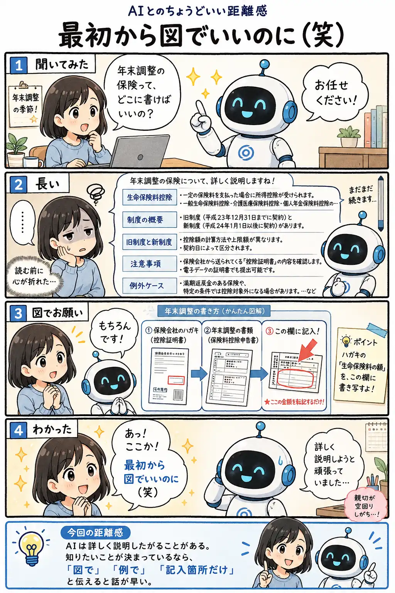

#028
最初から図でいいのに（笑）
長い説明より、1枚の図で分かることもあります。

メモ
AIに相談していると、ものすごく丁寧に説明してくれることがあります。
たとえば年末調整。 「保険のところ、どこに書けばいいの？」 と聞いただけなのに、生命保険料控除の制度説明が始まる。
旧制度と新制度。 控除額の計算。 適用条件。 例外ケース。
もちろん、必要な説明ではあります。
でも、今知りたいのはそこではなく、 「このハガキの数字を、書類のどの欄に写せばいいの？」 だったりします。
説明が長いと、読む前に心が折れます。
そんな時は、 「図で説明して」 「記入箇所だけ見せて」 と頼んで大丈夫です。
AIは文章で説明するだけでなく、 手順や関係を図っぽく整理することもできます。
矢印でつないだり、 表にしたり、 「ここに書く」と示したりすると、 急に分かりやすくなることがあります。
AIの説明が長すぎる時、 自分の理解力が足りないと思わなくて大丈夫です。
ただ、説明の形式が合っていないだけかもしれません。
今回の距離感
AIは詳しく説明したがることがある。知りたいことが決まっているなら「図で」「例で」「記入箇所だけ」と伝えると話が早い。